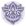
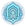
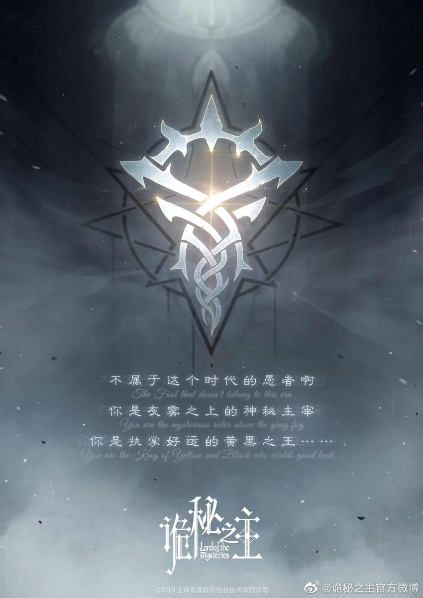

1. Who Is Klein Moretti?
"You can address me as…The Fool.„
— Klein Moretti on Lord of Mysteries, Chapter 6
Klein Moretti is the main protagonist of Lord of Mysteries, and a character of Circle of Inevitability. "He" is the current owner of the Sefirah Castle, and Half a Lord of Mysteries with authorities over the Fool

, Error , and Door
. "He" is also the mysterious leader of the Tarot Club known as The Fool and a Transmigrator who comes from the modern era. From year 1352 of the Fifth Epoch, "He" became the God of the Church of the Fool.2. Appearance
Zhou Mingrui: A young man with dark brown eyes and short black hair. His facial features were unremarkable, and he appeared refined, but he had obvious eye bags with an inkling of a double chin. He wore glasses.
Klein Moretti: "His" original body has black hair, brown eyes, an average-looking face, a deep outline, and is thinly built. Klein also has a distinct scholarly air to "Him". "His" refined aura is further reinforced by the valuable suits "He" dressed with and the canes "He" held on all occasions.
3. Sacred Emblem 
Sacred Emblem of the Fool is Pupil-less Eye and the Contorted Lines; represented secrecy and change...
.

4. Personality
Core Traits
Klein Moretti has exhibited a cautious and good-natured personality. "He" is humorous, polite, mature, and gentlemanly. Fundamentally a lover of justice, "He" will not hesitate to do what is right even at personal cost.
Evolution Through Experience
As an ordinary citizen of Earth who transmigrated suddenly into a dangerous world, Klein was naturally a bit fearful and indecisive at first. But during the short span of time following "His" transmigration, Klein experienced a lot of dangerous or tragic situations.
"He" became the leader of a secret organization, killed numerous monsters and humans, and finally evolved into a Beyonder surpassing the boundaries of a human being (aka Saint, Angel). Klein indeed became much more ruthless, confident, and mysterious.
Unwavering Principles
"His" experiences notwithstanding, Klein still preserves the core of his personality as one who is cautious, yet will uphold justice where necessary and not involve or target the innocent. "He" is also afraid that going against his principles could push him closer to losing control. Not harming the innocent is something he wishes for and a precaution against corruption and madness.
Personal Interests & Style
The current transmigrator is like the original Klein—"He" is interested in history and cares about his appearance. Klein immediately became a sophisticated and socialite person known for "His" elegant style as soon as "He" could afford the cost of different clothes and accessories.
Together with his humorous disposition and status as a Beyonder of the Fool Pathway, "He" gave off an amiable and mysterious aura. His interest in history can be explained in several ways: remnant memories of the history graduate, natural curiosity of a transmigrator, learning more to survive, and Pathway-related mysteries.
Acting & Deception
Klein Moretti had a talent for acting even before becoming a Beyonder treading the Fool Pathway. This was first seen when "He" had the reflex of assuming the attitude of a mystical and powerful entity called The Fool during "his" first trip in The Gray Fog. Klein then became much better at posing and faking identities as "He" progressed in the sequences of his Pathway with the Acting Method.
.